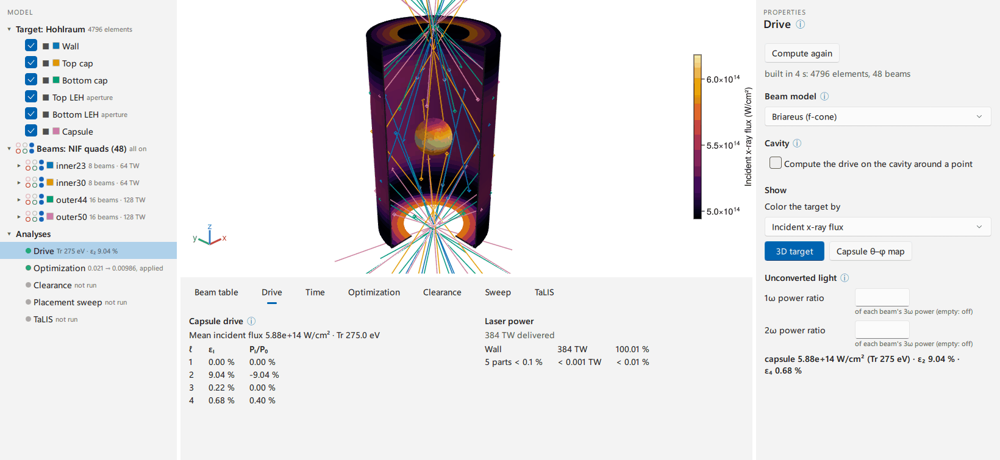
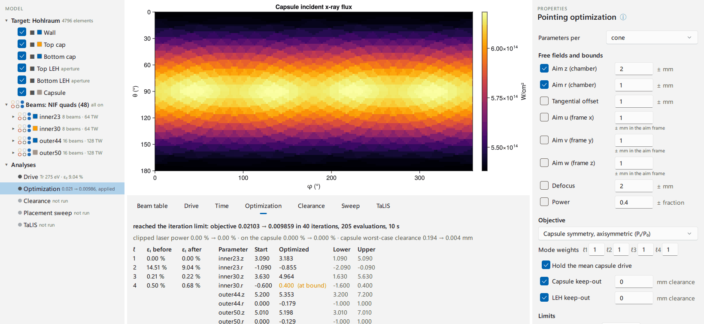
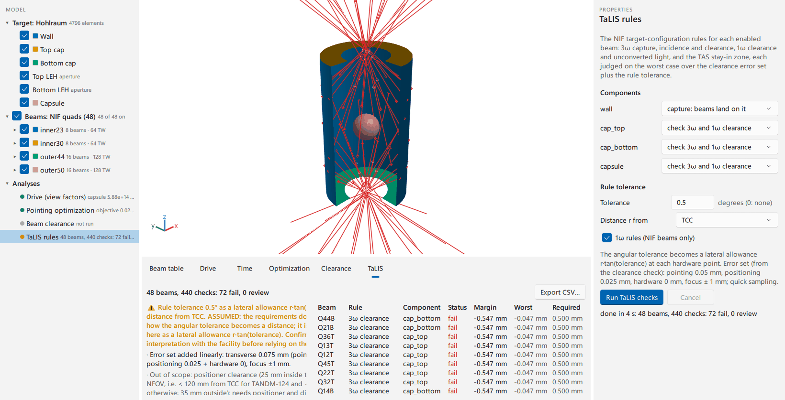
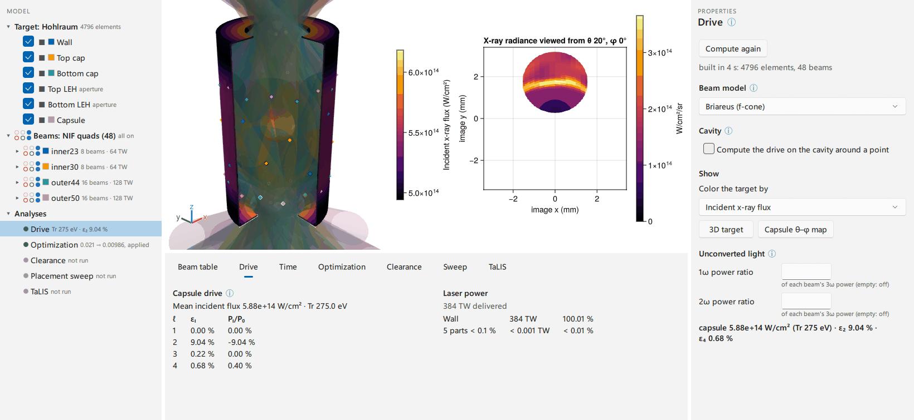
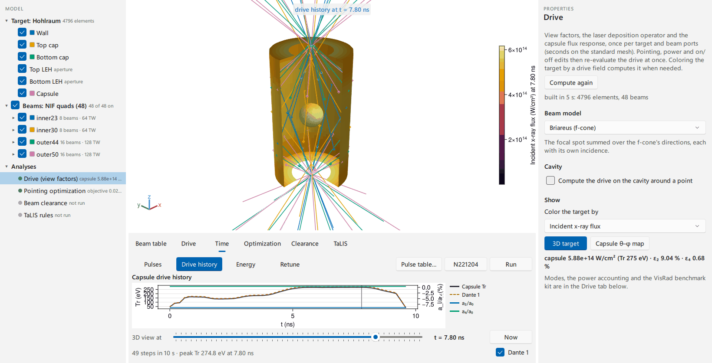
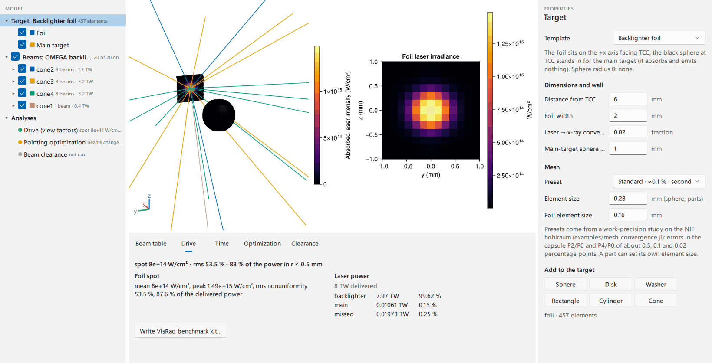

Desktop application
The Briareus window (the BriareusGUI package and its briareus command) puts the library's design loop on screen in the manner of a CAD tool such as VisRad: a target is built or imported, the beams are pointed, and the laser deposition, the x-ray drive and the capsule's drive symmetry follow every edit. The same window optimizes the pointing, checks beam clearance from the target hardware and the NIF TaLIS target-configuration rules, solves the drive through a pulse, and reads and writes VisRad pointing, beam summary and workspace files. It serves target designers who would otherwise iterate in VisRad, and anyone who wants the library's results without writing a script; every action in the window is a call into the same functions the scripts and tutorials use.

The window is laid out as a CAD tool rather than as a sequence of steps: everything is reachable at any time, and each analysis reports when its result is out of date.
Install
The briareus command
The command needs Julia 1.12.7 or later and no further Julia knowledge.
Install Julia through juliaup: on Windows
winget install --id 9NJNWW8PVKMN -e(Julia from the Microsoft Store), on macOS or Linuxcurl -fsSL https://install.julialang.org | sh. Open a new terminal afterward.Install the app and compile it (about ten minutes, once):
julia -e "using Pkg; Pkg.Apps.add(\"BriareusGUI\")"or, at the Julia prompt's package mode (
]),pkg> app add BriareusGUI.Put Julia's app folder on the
PATH(the install prints a warning when it is missing). Windows, in PowerShell:$p = [Environment]::GetEnvironmentVariable("Path", "User") [Environment]::SetEnvironmentVariable("Path", "$p;$HOME\.julia\bin", "User")macOS (zsh):
echo 'export PATH="$HOME/.julia/bin:$PATH"' >> ~/.zprofile; Linux (bash): the same line appended to~/.bashrc. Open a new terminal afterward.Add Briareus to the desktop and the applications menu:
briareus --shortcut. On Windows this makes Start-menu and desktop shortcuts, on macOS~/Applications/Briareus.app(listed by Launchpad and Spotlight), on Linux a menu entry.
The shortcut, or briareus in a terminal, then opens the window on a fresh design, and briareus design.briareus.toml opens a saved session. The window takes about 20 s to open (the first start after an update compiles for a few minutes). A shortcut shows a splash within about a second meanwhile; briareus in a terminal shows nothing until the window, since the command's code runs only once BriareusGUI and its graphics libraries have loaded. The command runs Julia on all threads (--threads=auto) and returns when the window closes. A shortcut has no terminal: its output goes to %LOCALAPPDATA%\Briareus\briareus.log (macOS: ~/Library/Logs/Briareus/), and a failure to start shows in the splash with the log's location.
pkg> app update BriareusGUI updates the app, and pkg> app rm BriareusGUI removes it (the shortcuts are deleted by hand). A shortcut runs a script that names the Qt libraries of the installed app for its splash, so briareus --shortcut is run again after an update.
From Julia
The window opens from any Julia session started with several threads (julia -t auto), so that background jobs leave it responsive:
pkg> add BriareusGUI
julia> using BriareusGUI
julia> sess = briareus() # or briareus(resolution = :fine)briareus blocks while the window is open (Qt runs its event loop on the calling thread) and returns the session when it closes. The window needs a graphical session, and it cannot share a process with a GLMakie window or an offscreen GLMakie render.
From a development checkout
BriareusGUI lives in the BriareusGUI/ directory of the Briareus repository; its environment takes the checkout's Briareus once that is developed into it:
git clone https://github.com/stillyslalom/Briareus.jl
julia --project=Briareus.jl/BriareusGUI -e "using Pkg; Pkg.develop(path=\"Briareus.jl\")"
git -C Briareus.jl checkout BriareusGUI/Project.toml
julia --project=Briareus.jl/BriareusGUI -t auto -e "using BriareusGUI; briareus()"Pkg.develop also writes a [sources] entry into BriareusGUI/Project.toml, which the git checkout discards (the manifest keeps the developed copy). The package carries no [sources]: an app installed from the registry would keep the entry's path .., which exists in the installed tree but holds no package, and the install would fail. The briareus command installs from the checkout with julia -e "using Pkg; Pkg.Apps.develop(path=\"Briareus.jl/BriareusGUI\")".
A first session
The steps below design the drive of a NIF hohlraum from the built-in template; each names the menu entries, and the panels are described in The window.
Open.
briareusopens on the hohlraum template with the 48 NIF quads at illustrative example cone aims (nif_quads). The model tree lists the hohlraum's components (wall, caps, entrance holes, capsule), the beams by cone and quad, and the analyses.The target. Selecting Target in the tree shows the template's dimensions, wall material and mesh in Properties. Target ▸ Mesh sets the element sizes: presets from a work-precision study on the NIF hohlraum (
examples/mesh_convergence.jl) give the capsule P2/P0 and P4/P0 to about 0.5 (coarse), 0.1 (standard) and 0.02 (fine, converged) percentage points.The beams. Selecting a cone (a group) in the tree shows its aim, defocus and power, which apply to all its quads; a quad or a beam is edited the same way, and the Beam table tab lists every one of them. View ▸ Beams ▸ Volumes draws each beam's 5 % contour along its f-cone, cut where it meets the target, so a beam clipping an entrance-hole lip or the capsule shows at a glance.
Compute the drive. Compute ▸ Drive (Ctrl + R), or coloring the target by a drive field (View ▸ Color target by ▸ Incident x-ray flux), computes the view factors on a worker thread (seconds on the standard mesh). From then on a beam edit re-evaluates the drive at once: the view factors depend only on the target and the beam ports.
Read P2/P0. The Drive tab lists the capsule's mode amplitudes ε₁…ε₄ and the Legendre ratios $P_l/P_0$, and the laser power accounting as
reportprints it (absorbed in the wall, on the caps' outer faces and on the capsule, the parts below 0.1 % of the delivered power on one line, and the light that misses the target); for a foil it lists the spot statistics instead. Capsule θ–φ map in the drive's properties (or View ▸ Capsule θ–φ map) puts the capsule's flux map in the 3D view's place. On the template at equal power per quad (an inner-cone fraction of 1/3), P2/P0 starts near −15 %: a static solve without cross-beam energy transfer or the hohlraum's dynamics is not balanced at a fielded cone fraction (the N221204 benchmark's static P2/P0 at 5.5 ns is −26 %; the shot's balance comes from wavelength-detuned transfer, wall motion, the gold bubble and closing entrance holes).Optimize. Compute ▸ Optimization selects the optimization task: the free parameters (aim, defocus and power per cone, quad or beam, within ± bounds), the objective (axisymmetric $P_l$, all-m 3D modes, optionally holding the drive level, or a foil spot's nonuniformity) and the keep-outs. Optimize starts
optimize_pointingin the background with progress and Cancel; the tab then compares the modes, the clipped power and the capsule clearance before and after, lists every parameter against its bounds (a parameter at a bound is marked), and Apply result writes the optimized pointing to the beam table. The model tree marks the result out of date once the beam table changes.
Check clearance. Compute ▸ Clearance (the worst-case beam-to-hardware clearance over pointing, positioning and focus errors) and Compute ▸ TaLIS (the NIF target-configuration rules, on NIF beams only) run in the background and color the beams by their worst status. A result is marked out of date in the tree when the beams or the target change afterward.

Save. File ▸ Save session (Ctrl + S) writes the whole design, from the target to the analyses' settings and the view, to a plain TOML file; File ▸ Open session (Ctrl + O), or
briareus design.briareus.toml, reads it back. Results are computed again on load. Edit ▸ Undo (Ctrl + Z) and Redo (Ctrl + Y) step through every design edit, typed, from a menu, from a file or from an applied optimization.
Two further steps use the drive's view factors without computing them again: an x-ray image of the target (Compute ▸ X-ray image along the view) and the drive through a pulse (the Time tab).


A backlighter design starts from File ▸ New target ▸ Backlighter foil, which loads the OMEGA backlighter beams; the drive then reports the foil spot's mean and peak intensity, its nonuniformity and the fraction of the power inside the spot, and the optimization offers the foil-uniformity objective.

The window
Model tree
The left panel lists the target's components (a hohlraum's wall, caps, entrance holes and capsule; diagnostic windows; free parts) with a swatch of their color in the 3D view, so the tree is the color key; the beams by group, quad and beam with on/off boxes; and the analyses (drive, optimization, clearance, TaLIS) with their state. Selecting a node selects it in the 3D view and shows it in Properties; Ctrl + click adds components or beams to the selection and Shift + click a range, which Properties then edits together; a double click fits the view to it. The context menu holds the node's actions, among them Show (draw it or not) and Include in calculations: a component left out is drawn as a gray ghost and removed from the target (which becomes an open enclosure), and beams left out are switched off.
Properties
The right panel edits the selection. A value the geometry or a check rejects is refused with the reason in the status line.
- Target: the template (hohlraum with capsule, backlighter foil, or custom parts only), its dimensions and wall material, and the mesh: a preset (above) or element sizes in mm for the wall and the capsule.
- Windows (
WallWindow): azimuth, height, round (the default, with the exact disk area) or rectangular, open or closed with their own albedo and conversion efficiency. Overlapping windows, or a window past the end of the wall, are refused. - Parts: spheres, disks, washers, rectangles, cylinders and cones placed anywhere, with their own albedo, conversion, sidedness, aperture flag and element size: a shield, a stalk, a detector aperture, a second foil. A part is placed in the chamber's frame, at an entrance hole (z pointing out of the hohlraum, so one placement mirrors between the two), at the backlighter foil, or in another part's frame, and moves with it when the target's dimensions or that part change; its position is given in Cartesian, cylindrical or spherical coordinates of that frame, and its orientation by the axis polar and azimuth angles and a rotation, in VisRad's order. A mesh part reads an STL file (Target ▸ Add part ▸ Mesh from STL file), scaled to mm, with its windings repaired (
orient_mesh) and its surface remeshed into elements of the part's size (remesh_mesh); a multi-body ASCII STL of named solids gives one part per solid. A VisRad object part is a component of an imported VisRad workspace; a VisRad rectangle, sphere or cylindrical hohlraum keeps VisRad's own element grid unless the part is given an element size. A part's Role names it for the analyses: Capsule (the observed surface; a CAD capsule is replaced in the calculations by a sphere fitted to it,fit_sphere, so a fill tube does not count), Backlighter foil (the foil objective's spot), or Thin film (left out of the drive's cavity, below). - Beams (a group, quad, beam, or any Ctrl-selected set): the aim relative to the ports (z, r and a tangential offset), a common aim point (x, y, z, as VisRad points a cluster at a reference point), or Aim at a component's centroid (the foil, an entrance hole, a part), which the beams then follow when it moves; defocus, power, on/off, and where the axis lands. Look along beam views the target from the beam's port. Beams belong to groups, as VisRad's clusters do: the cone by default, or any named set ("backlighter") made with Move to group; a group is edited, switched and optimized together, and its members keep their cone for the laser–plasma models. A NIF quad held as one beam splits into its four beams (their own ports, a quarter of the power each) to point them apart, and merges back.
- Facility (Beams ▸ Facility: NIF, OMEGA, OMEGA EP or other): the presets offered (NIF quads or beams at illustrative example cone aims; the OMEGA hohlraum or backlighter sets; OMEGA EP's beams are imported, its port geometry is not built in) and the checks (the TaLIS rules are NIF's).
- Analyses: the settings and Run of the drive, the optimization, the clearance check and the TaLIS rules.
3D view
The center canvas navigates as a CAD tool: the wheel zooms toward the point under the pointer, a left or middle drag orbits about the selection or the point under the pointer, a right drag, Shift + drag or Ctrl + middle drag pans, a click selects a component or beam, a double click fits it, f fits everything and the arrow keys orbit by 15°. The near and far planes follow the eye, so nothing is clipped however close the view. The View menu holds the standard views, a perspective or orthographic projection, turntable (z up) or free rotation, the cutaway (its context menu sets its width, its azimuth or the side facing the view, and the components it cuts), Look from port (a beam's port or any θ, φ) and Save view as image. Help ▸ Mouse and keys lists the bindings.
Beams are drawn as rays (each axis from the lens side to the surface it lands on, with the aim point marked) or as volumes, and colored by group or by their worst clearance or TaLIS status, in the tree's colors. The target is colored by component or by the absorbed laser intensity, the x-ray radiosity or the incident x-ray flux (W/cm²), which computes the drive when it is missing. Two further views share the canvas: the capsule's θ–φ flux map (or the foil's face), and an x-ray image (Compute ▸ X-ray image along the view, xray_image!), the radiance of the surfaces seen along the 3D view's direction, framed as the view frames them and seen through transparent apertures, so a hohlraum is imaged inside through its entrance holes. The image follows the drive as beams are edited. View ▸ Map or image beside the 3D view shows either in a second canvas next to the target.
Results
The bottom panel's tabs:
- Beam table: every cone, quad or beam with its pointing, defocus, power and on/off, edited in place.
- Drive: the view factors are computed once per target and beam ports, on a worker; beam edits then re-evaluate at once. The tab shows the capsule's mode amplitudes and $P_l/P_0$, the foil spot's statistics and the laser power accounting. A VisRad benchmark kit for the same case is written from a script with
write_visrad_kit. - Time: the drive through a pulse. Pulse table… fires the beams with a pulse table (
read_pulse_table: power per beam against time, per cone group, quad or beam; disabled beams stay off), and N221204 shape with N221204's delivered pulse shape (n221204_pulse), each beam reaching its table power at the peak. Run history solves the drive at each time of the pulses on the drive's view factors (drive_history). Four charts, in the tree's colors: Pulses (each group's power and the total, TW), Drive history (capsule Tᵣ and a synthetic Dante 1,dante, in eV; a₂/a₀ and a₄/a₀ in % on the right axis), Energy (the laser energy delivered by each time and where it went, kJ,energy_budget) and Retune (below). A click or drag on the chart, or the slider under it, moves the time cursor: the 3D view shows that step of the history on one color scale for the whole history; scrubbing computes nothing. Now returns to the drive at the table's powers, and a beam, pulse or target edit marks the history out of date. - Optimization: the free parameters, objective and limits described in the first session; a capsule keep-out (
SphereKeepOut, on by default) keeps every beam's worst-case envelope off the capsule, and an entrance-hole keep-out (ApertureKeepOut) off the hole rims. The run stops at the iteration or the evaluation limit, whichever comes first; canceling keeps the best design so far. - Clearance: the worst-case beam-to-hardware clearance (
clearance) over pointing, positioning, hardware and focus errors on the chosen components, with progress per batch of beams and Cancel (keeping the beams already checked); rows colored pass, review or fail, the closest beam per component, and CSV export (write_clearance_csv). - TaLIS: the NIF target-configuration checks (
talis_check): 3ω capture, incidence and clearance, 1ω clearance and unconverted-light management, and the TAS stay-in zone, on the chosen capture components and checked components, with the rule tolerance and how it becomes a distance (measured from the target chamber center, from the beam's aim point, the larger of the two, or from a given point); the error stack and sampling are the clearance check's. The report shows the notes and a per-rule summary beside every check, colored by status with its margin, with a draggable split between the two. The note on what the tolerance stands for stays at the top, cut to three lines until opened (more); the per-rule summary follows, then the error set, the checks not evaluated and the requirements out of scope (TALIS_OUT_OF_SCOPE). CSV export withwrite_talis_csv.
Files in and out
- Beams: beam tables (
read_beam_table,write_beam_table); a NIF VisRad SST pointing CSV (read_visrad_sst: aim points and defocus) and a Laser Beam Summary CSV (read_visrad_summary: pointing, defocus, power and spot). Beams off or absent in a file are switched off at their power, and the readers' warnings are listed. - VisRad workspaces: File ▸ Import VisRad workspace reads a workspace's components as VisRad object parts and its beams, on worker threads with progress; File ▸ Export VisRad workspace writes the beams back into a copy of the imported workspace (
write_visrad_workspace). - Results: File ▸ Export target as STL (
write_stl, mm); File ▸ Export results (write_results: the drive's per-element laser, radiosity and flux, the power per component and beam, and the capsule modes as CSV, with the session that produced them). - Retune to a reference drive (Compute ▸): from the pulse table of a reference shot that fired every beam of the table, the enabled beams' powers are retuned at each time of the table to restore the reference's capsule drive level and its modes through l = 4 (
retune_drive), within a limit relative to the reference powers and optionally staying near them; the disabled beams are the ones the shot loses. The new pulses are written as a pulse table; the dialog reports the worst-time mode 1 and Tᵣ change before and after, from drive histories of both, and the Time tab plots each group's power on the reference and retuned pulses and ε₁ before and after.
CAD workspaces and large targets
A CAD workspace can bring hundreds of thousands of facets, most of them mounting hardware far from the target. On import, a CAD part that reaches farther than twice the farthest aim point of the beams the workspace fires is drawn only (from its file's facets, not remeshed) and left out of the calculations; the status line names these parts, and Include in calculations puts one back. Beams the workspace leaves off are not drawn when most are (View ▸ Beams ▸ Show beams that are off).
The drive of a target with CAD parts runs on its cavity around the target chamber center (Drive ▸ Cavity; Briareus.enclosure): the elements bounding the free space around the point, without the assembly's outer faces. A thin film modeled as a solid that seals the point into a pocket (a capsule tent) is found and left out, and the drive's properties list what the cavity kept of each part. The cavity's view factors are balanced once aperture parts facing into the cavity close its entrance holes, with under 1 % of its rays leaking (CAVITY_MAX_LEAK). A target whose x-ray view factors would not fit in half the memory (radiation_size: about 160,000 elements on 32 GB) gets the laser deposition alone, with the reason in the status line.
Remeshing a CAD part and building a large target's ray-tracing hierarchy run on worker threads: an edit takes effect at once, with the part drawn from its file's facets or the previous target shown until the new one is ready, and a drive requested meanwhile starts when the target is ready; so does a CAD capsule's sphere fit. A CAD part that is one cylinder or sphere as a whole (a tube, a shell; fit_surfaces) is integrated on that surface in the view factors; parts of several faces stay flat, and the drive's status names flat parts carrying more than 50 facets per element (a curved face tessellated in slivers, which slows the view factors).
Scripting the window's steps
briareus returns its session (a DesignSession) when the window closes, and the controllers in BriareusGUI.Controllers run the window's steps from a script without a window. Text-field setters (edit_*) take the field's text and return false, with the reason in the controller's error, when the geometry or a check rejects the value.
using BriareusGUI, BriareusGUI.Controllers
sess = DesignSession(resolution = :coarse) # hohlraum + NIF quads
add_window!(sess.target; phi = 60.0, open = true) # a 1 × 1 mm hole in the wall
add_part!(sess.target, :disk; z = 7.5, r1 = 2.5, theta = 180) # a shield above the top LEH
edit_mesh!(sess.target, :capsule_h, "0.05") # element sizes in mm
edit_beam_node!(sess.beams, :group, "inner23", :z, "3.2") # inner 23.5° cone aim z (mm)
import_visrad_sst!(sess.beams, "pointing.csv") # or apply a VisRad pointing file
build_scenario!(sess) # view factors + evaluation
drive_summary(sess.drive.result[])
start_optimize!(sess; spawn = false) # blocks; spawn = true runs on a worker
accept_optimum!(sess)
start_clearance!(sess; spawn = false)
worst_rows(sess.review)
start_talis!(sess; spawn = false) # TaLIS rules, same error stack
talis_rule_rows(sess.talis)
talis_notes(sess.talis) # the rule-tolerance note first
export_results(sess, "results") # per-element and per-mode CSV
retune_to_reference!(sess, "reference.csv", "retuned.csv") # disabled beams are the dropped ones
load_pulses!(sess, "reference.csv") # or use_pulse_shape!(sess): N221204's shape
start_history!(sess) # drive_history on the drive's view factors
time_chart(sess, :drive) # what the Time tab plots (also :pulses, :energy, :retune)
set_time_cursor!(sess, 6.0) # the 3D view at the history step nearest 6 ns
save_session("design.briareus.toml", sess) # the design as TOML; load_session! reads it
record!(sess); undo!(sess) # undo/redo steps (a window records them itself)The screenshots on this page are produced by dev/gui_screenshots.jl in the repository, which drives the real window through the same callbacks as its menus.